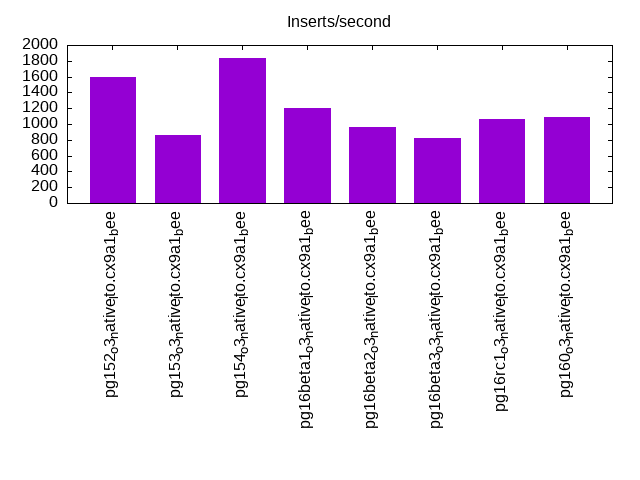

This is a report for the insert benchmark with 800M docs and 1 client(s). It is generated by scripts (bash, awk, sed) and Tufte might not be impressed. An overview of the insert benchmark is here and a short update is here. Below, by DBMS, I mean DBMS+version.config. An example is my8020.c10b40 where my means MySQL, 8020 is version 8.0.20 and c10b40 is the name for the configuration file.
The test server has 8 AMD cores, 16G RAM and an NVMe SSD. It is described here as the Beelink. The benchmark was run with 1 client and there were 1 or 3 connections per client (1 for queries or inserts without rate limits, 1+1 for rate limited inserts+deletes). It uses 1 table. It loads 800M rows per table without secondary indexes, creates secondary indexes, then inserts 30M rows per table with a delete per insert to avoid growing the table. It then does 3 read+write tests for 7200s each that do queries as fast as possible with 100, 500 and then 1000 inserts/second/client concurrent with the queries and 1000 deletes/second to avoid growing the table. The database is cached by Postgres. Clients and the DBMS share one server. The per-database configs are in the per-database subdirectories here.
The tested DBMS are:
The numbers are inserts/s for l.i0 and l.i1, indexed docs (or rows) /s for l.x and queries/s for q*.2. The values are the average rate over the entire test for inserts (IPS) and queries (QPS). The range of values for IPS and QPS is split into 3 parts: bottom 25%, middle 50%, top 25%. Values in the bottom 25% have a red background, values in the top 25% have a green background and values in the middle have no color. A gray background is used for values that can be ignored because the DBMS did not sustain the target insert rate. Red backgrounds are not used when the minimum value is within 80% of the max value.
| dbms | l.i0 | l.x | l.i1 | q100.1 | q500.1 | q1000.1 |
|---|---|---|---|---|---|---|
| pg152_o3_native_lto.cx9a1_bee | 85837 | 210497 | 1589 | 8516 | 8956 | 8675 |
| pg153_o3_native_lto.cx9a1_bee | 84433 | 209505 | 856 | 8600 | 8520 | 8395 |
| pg154_o3_native_lto.cx9a1_bee | 86068 | 212116 | 1835 | 8812 | 8614 | 8422 |
| pg16beta1_o3_native_lto.cx9a1_bee | 86402 | 204368 | 1201 | 8673 | 8903 | 8567 |
| pg16beta2_o3_native_lto.cx9a1_bee | 84219 | 205628 | 967 | 8514 | 8466 | 8440 |
| pg16beta3_o3_native_lto.cx9a1_bee | 83761 | 203588 | 821 | 9207 | 8802 | 8601 |
| pg16rc1_o3_native_lto.cx9a1_bee | 85717 | 198634 | 1062 | 9066 | 8605 | 8572 |
| pg160_o3_native_lto.cx9a1_bee | 85288 | 206318 | 1086 | 8758 | 8628 | 8445 |
This table has relative throughput, throughput for the DBMS relative to the DBMS in the first line, using the absolute throughput from the previous table. Values less than 0.95 have a yellow background. Values greater than 1.05 have a blue background.
| dbms | l.i0 | l.x | l.i1 | q100.1 | q500.1 | q1000.1 |
|---|---|---|---|---|---|---|
| pg152_o3_native_lto.cx9a1_bee | 1.00 | 1.00 | 1.00 | 1.00 | 1.00 | 1.00 |
| pg153_o3_native_lto.cx9a1_bee | 0.98 | 1.00 | 0.54 | 1.01 | 0.95 | 0.97 |
| pg154_o3_native_lto.cx9a1_bee | 1.00 | 1.01 | 1.15 | 1.03 | 0.96 | 0.97 |
| pg16beta1_o3_native_lto.cx9a1_bee | 1.01 | 0.97 | 0.76 | 1.02 | 0.99 | 0.99 |
| pg16beta2_o3_native_lto.cx9a1_bee | 0.98 | 0.98 | 0.61 | 1.00 | 0.95 | 0.97 |
| pg16beta3_o3_native_lto.cx9a1_bee | 0.98 | 0.97 | 0.52 | 1.08 | 0.98 | 0.99 |
| pg16rc1_o3_native_lto.cx9a1_bee | 1.00 | 0.94 | 0.67 | 1.06 | 0.96 | 0.99 |
| pg160_o3_native_lto.cx9a1_bee | 0.99 | 0.98 | 0.68 | 1.03 | 0.96 | 0.97 |
This lists the average rate of inserts/s for the tests that do inserts concurrent with queries. For such tests the query rate is listed in the table above. The read+write tests are setup so that the insert rate should match the target rate every second. Cells that are not at least 95% of the target have a red background to indicate a failure to satisfy the target.
| dbms | q100.1 | q500.1 | q1000.1 |
|---|---|---|---|
| pg152_o3_native_lto.cx9a1_bee | 100 | 499 | 997 |
| pg153_o3_native_lto.cx9a1_bee | 100 | 499 | 998 |
| pg154_o3_native_lto.cx9a1_bee | 100 | 499 | 974 |
| pg16beta1_o3_native_lto.cx9a1_bee | 100 | 499 | 998 |
| pg16beta2_o3_native_lto.cx9a1_bee | 100 | 499 | 998 |
| pg16beta3_o3_native_lto.cx9a1_bee | 100 | 499 | 997 |
| pg16rc1_o3_native_lto.cx9a1_bee | 100 | 499 | 998 |
| pg160_o3_native_lto.cx9a1_bee | 100 | 499 | 998 |
| target | 100 | 500 | 1000 |
l.i0: load without secondary indexes. Graphs for performance per 1-second interval are here.
Average throughput:
Insert response time histogram: each cell has the percentage of responses that take <= the time in the header and max is the max response time in seconds. For the max column values in the top 25% of the range have a red background and in the bottom 25% of the range have a green background. The red background is not used when the min value is within 80% of the max value.
| dbms | 256us | 1ms | 4ms | 16ms | 64ms | 256ms | 1s | 4s | 16s | gt | max |
|---|---|---|---|---|---|---|---|---|---|---|---|
| pg152_o3_native_lto.cx9a1_bee | 0.011 | 99.988 | nonzero | nonzero | 0.029 | ||||||
| pg153_o3_native_lto.cx9a1_bee | 0.001 | 99.999 | 0.001 | nonzero | 0.057 | ||||||
| pg154_o3_native_lto.cx9a1_bee | 0.033 | 99.966 | 0.001 | nonzero | 0.056 | ||||||
| pg16beta1_o3_native_lto.cx9a1_bee | 0.046 | 99.953 | nonzero | nonzero | 0.058 | ||||||
| pg16beta2_o3_native_lto.cx9a1_bee | 99.999 | 0.001 | nonzero | 0.057 | |||||||
| pg16beta3_o3_native_lto.cx9a1_bee | 99.999 | nonzero | nonzero | 0.058 | |||||||
| pg16rc1_o3_native_lto.cx9a1_bee | 0.022 | 99.977 | nonzero | nonzero | 0.060 | ||||||
| pg160_o3_native_lto.cx9a1_bee | 0.006 | 99.993 | 0.001 | nonzero | 0.046 |
Performance metrics for the DBMS listed above. Some are normalized by throughput, others are not. Legend for results is here.
ips qps rps rmbps wps wmbps rpq rkbpq wpi wkbpi csps cpups cspq cpupq dbgb1 dbgb2 rss maxop p50 p99 tag 85837 0 37 0.3 126.2 35.1 0.000 0.003 0.001 0.419 10386 22.8 0.121 21 76.5 116.6 1.4 0.029 85914 83602 800m.pg152_o3_native_lto.cx9a1_bee 84433 0 35 0.3 117.5 34.5 0.000 0.003 0.001 0.419 10226 22.8 0.121 22 76.5 116.6 3.5 0.057 84704 82256 800m.pg153_o3_native_lto.cx9a1_bee 86068 0 35 0.3 124.2 35.2 0.000 0.003 0.001 0.418 10389 22.9 0.121 21 76.5 116.6 6.0 0.056 86303 83706 800m.pg154_o3_native_lto.cx9a1_bee 86402 0 36 0.3 121.8 35.3 0.000 0.003 0.001 0.419 10442 23.0 0.121 21 76.5 116.6 0.5 0.058 86605 84128 800m.pg16beta1_o3_native_lto.cx9a1_bee 84219 0 35 0.3 122.0 34.4 0.000 0.003 0.001 0.418 10175 23.0 0.121 22 76.5 116.6 3.6 0.057 84406 81999 800m.pg16beta2_o3_native_lto.cx9a1_bee 83761 0 35 0.3 116.1 34.2 0.000 0.003 0.001 0.418 10122 22.7 0.121 22 76.5 116.6 3.8 0.058 83910 81635 800m.pg16beta3_o3_native_lto.cx9a1_bee 85717 0 35 0.3 122.4 35.1 0.000 0.003 0.001 0.419 10363 22.5 0.121 21 76.5 116.6 0.5 0.060 85816 83507 800m.pg16rc1_o3_native_lto.cx9a1_bee 85288 0 36 0.3 125.0 34.9 0.000 0.003 0.001 0.419 10484 22.8 0.123 21 76.5 116.6 2.0 0.046 85505 82745 800m.pg160_o3_native_lto.cx9a1_bee
l.x: create secondary indexes.
Average throughput:
Performance metrics for the DBMS listed above. Some are normalized by throughput, others are not. Legend for results is here.
ips qps rps rmbps wps wmbps rpq rkbpq wpi wkbpi csps cpups cspq cpupq dbgb1 dbgb2 rss maxop p50 p99 tag 210497 0 612 75.9 177.2 64.8 0.003 0.369 0.001 0.315 406 12.5 0.002 5 147.0 187.1 10.2 0.004 NA NA 800m.pg152_o3_native_lto.cx9a1_bee 209505 0 610 75.6 171.9 64.5 0.003 0.370 0.001 0.315 420 12.5 0.002 5 147.0 187.1 10.2 0.005 NA NA 800m.pg153_o3_native_lto.cx9a1_bee 212116 0 618 76.5 178.9 65.4 0.003 0.369 0.001 0.316 412 12.4 0.002 5 147.0 187.1 10.2 0.005 NA NA 800m.pg154_o3_native_lto.cx9a1_bee 204368 0 594 73.7 171.5 63.0 0.003 0.369 0.001 0.316 379 12.5 0.002 5 147.0 187.1 10.2 0.004 NA NA 800m.pg16beta1_o3_native_lto.cx9a1_bee 205628 0 597 74.1 173.3 63.2 0.003 0.369 0.001 0.315 390 12.5 0.002 5 147.0 187.1 10.2 0.006 NA NA 800m.pg16beta2_o3_native_lto.cx9a1_bee 203588 0 591 73.4 170.7 62.6 0.003 0.369 0.001 0.315 395 12.5 0.002 5 147.0 187.1 10.2 0.005 NA NA 800m.pg16beta3_o3_native_lto.cx9a1_bee 198634 0 577 71.6 166.4 61.3 0.003 0.369 0.001 0.316 391 12.5 0.002 5 147.0 187.1 10.2 0.005 NA NA 800m.pg16rc1_o3_native_lto.cx9a1_bee 206318 0 599 74.5 171.0 63.8 0.003 0.370 0.001 0.317 600 12.6 0.003 5 147.0 187.1 10.2 0.005 NA NA 800m.pg160_o3_native_lto.cx9a1_bee
l.i1: continue load after secondary indexes created. Graphs for performance per 1-second interval are here.
Average throughput:
Insert response time histogram: each cell has the percentage of responses that take <= the time in the header and max is the max response time in seconds. For the max column values in the top 25% of the range have a red background and in the bottom 25% of the range have a green background. The red background is not used when the min value is within 80% of the max value.
| dbms | 256us | 1ms | 4ms | 16ms | 64ms | 256ms | 1s | 4s | 16s | gt | max |
|---|---|---|---|---|---|---|---|---|---|---|---|
| pg152_o3_native_lto.cx9a1_bee | 76.868 | 23.100 | 0.033 | 0.224 | |||||||
| pg153_o3_native_lto.cx9a1_bee | 82.021 | 17.979 | 0.001 | 0.080 | |||||||
| pg154_o3_native_lto.cx9a1_bee | 79.866 | 20.105 | 0.029 | nonzero | 0.295 | ||||||
| pg16beta1_o3_native_lto.cx9a1_bee | 75.250 | 24.720 | 0.030 | 0.237 | |||||||
| pg16beta2_o3_native_lto.cx9a1_bee | 75.572 | 24.397 | 0.030 | 0.191 | |||||||
| pg16beta3_o3_native_lto.cx9a1_bee | 81.589 | 18.410 | 0.001 | 0.130 | |||||||
| pg16rc1_o3_native_lto.cx9a1_bee | 78.032 | 21.936 | 0.033 | 0.255 | |||||||
| pg160_o3_native_lto.cx9a1_bee | 80.176 | 19.791 | 0.033 | 0.254 |
Delete response time histogram: each cell has the percentage of responses that take <= the time in the header and max is the max response time in seconds. For the max column values in the top 25% of the range have a red background and in the bottom 25% of the range have a green background. The red background is not used when the min value is within 80% of the max value.
| dbms | 256us | 1ms | 4ms | 16ms | 64ms | 256ms | 1s | 4s | 16s | gt | max |
|---|---|---|---|---|---|---|---|---|---|---|---|
| pg152_o3_native_lto.cx9a1_bee | 0.002 | 59.488 | 0.689 | 3.736 | 19.784 | 16.302 | 0.102 | ||||
| pg153_o3_native_lto.cx9a1_bee | 0.003 | 49.922 | 0.820 | 4.500 | 16.393 | 28.362 | nonzero | 0.285 | |||
| pg154_o3_native_lto.cx9a1_bee | 0.001 | 65.668 | 0.842 | 4.464 | 16.756 | 12.269 | 0.106 | ||||
| pg16beta1_o3_native_lto.cx9a1_bee | 0.002 | 52.549 | 0.795 | 4.390 | 16.524 | 25.740 | 0.144 | ||||
| pg16beta2_o3_native_lto.cx9a1_bee | 0.002 | 51.306 | 0.712 | 3.789 | 14.028 | 30.163 | 0.188 | ||||
| pg16beta3_o3_native_lto.cx9a1_bee | 0.003 | 53.522 | 0.677 | 3.750 | 13.944 | 28.104 | nonzero | 0.271 | |||
| pg16rc1_o3_native_lto.cx9a1_bee | 0.002 | 52.374 | 0.707 | 3.741 | 13.923 | 29.253 | 0.173 | ||||
| pg160_o3_native_lto.cx9a1_bee | 0.003 | 44.843 | 0.814 | 4.533 | 16.426 | 33.380 | 0.152 |
Performance metrics for the DBMS listed above. Some are normalized by throughput, others are not. Legend for results is here.
ips qps rps rmbps wps wmbps rpq rkbpq wpi wkbpi csps cpups cspq cpupq dbgb1 dbgb2 rss maxop p50 p99 tag 1589 0 2588 25.3 3007.6 36.7 1.628 16.270 1.892 23.632 6124 12.2 3.853 614 151.6 191.7 9.5 0.224 899 499 800m.pg152_o3_native_lto.cx9a1_bee 856 0 1371 10.9 1572.5 19.1 1.602 13.075 1.837 22.825 3330 12.4 3.889 1159 152.2 192.2 9.7 0.080 350 249 800m.pg153_o3_native_lto.cx9a1_bee 1835 0 2978 29.0 3461.3 41.5 1.623 16.165 1.886 23.186 6985 11.9 3.807 519 150.7 190.8 3.9 0.295 1099 499 800m.pg154_o3_native_lto.cx9a1_bee 1201 0 1957 19.1 2281.8 29.0 1.629 16.256 1.899 24.685 4679 12.6 3.895 839 151.4 191.5 9.2 0.237 599 349 800m.pg16beta1_o3_native_lto.cx9a1_bee 967 0 1572 15.3 1830.3 22.7 1.627 16.204 1.894 24.050 3788 12.6 3.919 1043 150.8 174.8 1.9 0.191 400 250 800m.pg16beta2_o3_native_lto.cx9a1_bee 821 0 1314 10.5 1509.7 18.5 1.600 13.061 1.838 23.027 3208 12.3 3.906 1198 152.2 192.2 9.8 0.130 300 200 800m.pg16beta3_o3_native_lto.cx9a1_bee 1062 0 1729 16.8 2020.5 25.9 1.628 16.247 1.903 24.953 4153 12.7 3.911 957 151.3 191.3 9.3 0.255 499 300 800m.pg16rc1_o3_native_lto.cx9a1_bee 1086 0 1767 17.2 2046.7 25.5 1.627 16.235 1.885 24.029 4219 13.0 3.885 958 150.5 178.4 9.3 0.254 599 349 800m.pg160_o3_native_lto.cx9a1_bee
q100.1: range queries with 100 insert/s per client. Graphs for performance per 1-second interval are here.
Average throughput:
Query response time histogram: each cell has the percentage of responses that take <= the time in the header and max is the max response time in seconds. For max values in the top 25% of the range have a red background and in the bottom 25% of the range have a green background. The red background is not used when the min value is within 80% of the max value.
| dbms | 256us | 1ms | 4ms | 16ms | 64ms | 256ms | 1s | 4s | 16s | gt | max |
|---|---|---|---|---|---|---|---|---|---|---|---|
| pg152_o3_native_lto.cx9a1_bee | 99.836 | 0.162 | 0.001 | 0.002 | 0.016 | ||||||
| pg153_o3_native_lto.cx9a1_bee | 99.869 | 0.129 | nonzero | 0.001 | 0.016 | ||||||
| pg154_o3_native_lto.cx9a1_bee | 99.872 | 0.126 | nonzero | 0.001 | nonzero | 0.020 | |||||
| pg16beta1_o3_native_lto.cx9a1_bee | 99.830 | 0.169 | nonzero | 0.001 | 0.010 | ||||||
| pg16beta2_o3_native_lto.cx9a1_bee | 99.873 | 0.125 | nonzero | 0.001 | nonzero | 0.016 | |||||
| pg16beta3_o3_native_lto.cx9a1_bee | 99.896 | 0.102 | nonzero | 0.001 | 0.016 | ||||||
| pg16rc1_o3_native_lto.cx9a1_bee | 99.867 | 0.131 | nonzero | 0.001 | 0.015 | ||||||
| pg160_o3_native_lto.cx9a1_bee | 99.871 | 0.127 | nonzero | 0.001 | nonzero | 0.019 |
Insert response time histogram: each cell has the percentage of responses that take <= the time in the header and max is the max response time in seconds. For max values in the top 25% of the range have a red background and in the bottom 25% of the range have a green background. The red background is not used when the min value is within 80% of the max value.
| dbms | 256us | 1ms | 4ms | 16ms | 64ms | 256ms | 1s | 4s | 16s | gt | max |
|---|---|---|---|---|---|---|---|---|---|---|---|
| pg152_o3_native_lto.cx9a1_bee | 61.542 | 38.458 | 0.034 | ||||||||
| pg153_o3_native_lto.cx9a1_bee | 82.097 | 17.903 | 0.033 | ||||||||
| pg154_o3_native_lto.cx9a1_bee | 67.340 | 32.660 | 0.032 | ||||||||
| pg16beta1_o3_native_lto.cx9a1_bee | 84.708 | 15.292 | 0.031 | ||||||||
| pg16beta2_o3_native_lto.cx9a1_bee | 62.528 | 37.472 | 0.033 | ||||||||
| pg16beta3_o3_native_lto.cx9a1_bee | 66.028 | 33.972 | 0.033 | ||||||||
| pg16rc1_o3_native_lto.cx9a1_bee | 72.528 | 27.472 | 0.033 | ||||||||
| pg160_o3_native_lto.cx9a1_bee | 63.861 | 36.139 | 0.052 |
Delete response time histogram: each cell has the percentage of responses that take <= the time in the header and max is the max response time in seconds. For max values in the top 25% of the range have a red background and in the bottom 25% of the range have a green background. The red background is not used when the min value is within 80% of the max value.
| dbms | 256us | 1ms | 4ms | 16ms | 64ms | 256ms | 1s | 4s | 16s | gt | max |
|---|---|---|---|---|---|---|---|---|---|---|---|
| pg152_o3_native_lto.cx9a1_bee | 5.597 | 27.729 | 66.660 | 0.014 | 0.016 | ||||||
| pg153_o3_native_lto.cx9a1_bee | 0.604 | 98.778 | 0.097 | 0.521 | 0.009 | ||||||
| pg154_o3_native_lto.cx9a1_bee | 0.701 | 99.007 | 0.028 | 0.264 | 0.007 | ||||||
| pg16beta1_o3_native_lto.cx9a1_bee | 2.729 | 97.236 | 0.007 | 0.028 | 0.010 | ||||||
| pg16beta2_o3_native_lto.cx9a1_bee | 1.243 | 98.208 | 0.118 | 0.431 | 0.009 | ||||||
| pg16beta3_o3_native_lto.cx9a1_bee | 0.396 | 99.243 | 0.042 | 0.319 | 0.008 | ||||||
| pg16rc1_o3_native_lto.cx9a1_bee | 0.542 | 99.118 | 0.042 | 0.299 | 0.010 | ||||||
| pg160_o3_native_lto.cx9a1_bee | 0.583 | 98.917 | 0.042 | 0.458 | 0.010 |
Performance metrics for the DBMS listed above. Some are normalized by throughput, others are not. Legend for results is here.
ips qps rps rmbps wps wmbps rpq rkbpq wpi wkbpi csps cpups cspq cpupq dbgb1 dbgb2 rss maxop p50 p99 tag 100 8516 182 1.5 198.0 2.8 0.021 0.175 1.986 29.089 33186 13.2 3.897 124 151.6 186.6 10.1 0.016 8404 7560 800m.pg152_o3_native_lto.cx9a1_bee 100 8600 174 1.4 204.6 2.8 0.020 0.166 2.050 28.957 33487 13.0 3.894 121 152.2 188.4 10.1 0.016 8134 7623 800m.pg153_o3_native_lto.cx9a1_bee 100 8812 175 1.4 213.0 2.9 0.020 0.162 2.135 29.635 34303 12.9 3.893 117 150.8 188.1 10.1 0.020 8246 7767 800m.pg154_o3_native_lto.cx9a1_bee 100 8673 181 1.4 207.7 2.8 0.021 0.171 2.081 29.095 33759 13.0 3.893 120 151.4 187.5 10.1 0.010 8391 7841 800m.pg16beta1_o3_native_lto.cx9a1_bee 100 8514 175 1.4 210.2 2.9 0.021 0.168 2.106 29.492 33157 13.0 3.894 122 150.9 186.9 10.0 0.016 8263 7893 800m.pg16beta2_o3_native_lto.cx9a1_bee 100 9207 175 1.4 206.9 2.8 0.019 0.155 2.073 29.028 35796 12.8 3.888 111 152.2 188.5 10.0 0.016 8629 7972 800m.pg16beta3_o3_native_lto.cx9a1_bee 100 9066 180 1.4 207.7 2.8 0.020 0.164 2.081 28.864 35256 12.8 3.889 113 151.3 187.3 10.1 0.015 8484 7959 800m.pg16rc1_o3_native_lto.cx9a1_bee 100 8758 176 1.4 214.4 2.9 0.020 0.164 2.148 29.819 34094 12.9 3.893 118 150.6 186.5 10.0 0.019 8246 7878 800m.pg160_o3_native_lto.cx9a1_bee
q500.1: range queries with 500 insert/s per client. Graphs for performance per 1-second interval are here.
Average throughput:
Query response time histogram: each cell has the percentage of responses that take <= the time in the header and max is the max response time in seconds. For max values in the top 25% of the range have a red background and in the bottom 25% of the range have a green background. The red background is not used when the min value is within 80% of the max value.
| dbms | 256us | 1ms | 4ms | 16ms | 64ms | 256ms | 1s | 4s | 16s | gt | max |
|---|---|---|---|---|---|---|---|---|---|---|---|
| pg152_o3_native_lto.cx9a1_bee | 99.901 | 0.094 | 0.001 | 0.004 | 0.016 | ||||||
| pg153_o3_native_lto.cx9a1_bee | 99.914 | 0.082 | nonzero | 0.004 | 0.016 | ||||||
| pg154_o3_native_lto.cx9a1_bee | 99.921 | 0.074 | nonzero | 0.004 | 0.016 | ||||||
| pg16beta1_o3_native_lto.cx9a1_bee | 99.926 | 0.070 | nonzero | 0.004 | 0.016 | ||||||
| pg16beta2_o3_native_lto.cx9a1_bee | 99.914 | 0.082 | 0.001 | 0.004 | 0.016 | ||||||
| pg16beta3_o3_native_lto.cx9a1_bee | 99.922 | 0.074 | nonzero | 0.004 | 0.015 | ||||||
| pg16rc1_o3_native_lto.cx9a1_bee | 99.918 | 0.077 | nonzero | 0.004 | 0.016 | ||||||
| pg160_o3_native_lto.cx9a1_bee | 99.920 | 0.076 | nonzero | 0.004 | nonzero | 0.016 |
Insert response time histogram: each cell has the percentage of responses that take <= the time in the header and max is the max response time in seconds. For max values in the top 25% of the range have a red background and in the bottom 25% of the range have a green background. The red background is not used when the min value is within 80% of the max value.
| dbms | 256us | 1ms | 4ms | 16ms | 64ms | 256ms | 1s | 4s | 16s | gt | max |
|---|---|---|---|---|---|---|---|---|---|---|---|
| pg152_o3_native_lto.cx9a1_bee | 91.826 | 8.174 | 0.032 | ||||||||
| pg153_o3_native_lto.cx9a1_bee | 93.065 | 6.935 | 0.031 | ||||||||
| pg154_o3_native_lto.cx9a1_bee | 92.949 | 7.051 | 0.033 | ||||||||
| pg16beta1_o3_native_lto.cx9a1_bee | 91.801 | 8.199 | 0.032 | ||||||||
| pg16beta2_o3_native_lto.cx9a1_bee | 91.857 | 8.143 | 0.032 | ||||||||
| pg16beta3_o3_native_lto.cx9a1_bee | 92.607 | 7.393 | 0.030 | ||||||||
| pg16rc1_o3_native_lto.cx9a1_bee | 91.471 | 8.529 | 0.032 | ||||||||
| pg160_o3_native_lto.cx9a1_bee | 91.464 | 8.536 | 0.035 |
Delete response time histogram: each cell has the percentage of responses that take <= the time in the header and max is the max response time in seconds. For max values in the top 25% of the range have a red background and in the bottom 25% of the range have a green background. The red background is not used when the min value is within 80% of the max value.
| dbms | 256us | 1ms | 4ms | 16ms | 64ms | 256ms | 1s | 4s | 16s | gt | max |
|---|---|---|---|---|---|---|---|---|---|---|---|
| pg152_o3_native_lto.cx9a1_bee | 0.453 | 6.764 | 0.004 | 16.856 | 75.924 | 0.050 | |||||
| pg153_o3_native_lto.cx9a1_bee | 7.217 | 92.490 | 0.117 | 0.176 | 0.010 | ||||||
| pg154_o3_native_lto.cx9a1_bee | 6.643 | 93.096 | 0.067 | 0.194 | 0.010 | ||||||
| pg16beta1_o3_native_lto.cx9a1_bee | 7.356 | 92.335 | 0.082 | 0.228 | 0.010 | ||||||
| pg16beta2_o3_native_lto.cx9a1_bee | 6.286 | 93.440 | 0.051 | 0.222 | 0.010 | ||||||
| pg16beta3_o3_native_lto.cx9a1_bee | 6.578 | 93.168 | 0.051 | 0.203 | 0.009 | ||||||
| pg16rc1_o3_native_lto.cx9a1_bee | 5.631 | 94.083 | 0.075 | 0.211 | 0.010 | ||||||
| pg160_o3_native_lto.cx9a1_bee | 6.814 | 92.904 | 0.069 | 0.213 | 0.010 |
Performance metrics for the DBMS listed above. Some are normalized by throughput, others are not. Legend for results is here.
ips qps rps rmbps wps wmbps rpq rkbpq wpi wkbpi csps cpups cspq cpupq dbgb1 dbgb2 rss maxop p50 p99 tag 499 8956 805 6.5 963.0 12.2 0.090 0.738 1.930 24.973 36263 16.9 4.049 151 151.6 177.9 10.1 0.016 8471 8121 800m.pg152_o3_native_lto.cx9a1_bee 499 8520 803 6.4 954.7 12.1 0.094 0.771 1.915 24.887 34645 13.6 4.066 128 152.3 179.3 10.1 0.016 8135 7839 800m.pg153_o3_native_lto.cx9a1_bee 499 8614 804 6.4 959.4 12.2 0.093 0.764 1.922 25.054 34949 13.6 4.057 126 151.1 179.0 10.1 0.016 8122 7879 800m.pg154_o3_native_lto.cx9a1_bee 499 8903 804 6.5 960.7 12.1 0.090 0.743 1.925 24.899 36050 13.6 4.049 122 151.4 178.4 10.1 0.016 8391 8041 800m.pg16beta1_o3_native_lto.cx9a1_bee 499 8466 804 6.4 962.4 12.3 0.095 0.777 1.929 25.150 34398 13.7 4.063 129 151.2 178.3 10.0 0.016 8198 7945 800m.pg16beta2_o3_native_lto.cx9a1_bee 499 8802 802 6.4 953.4 12.1 0.091 0.746 1.911 24.853 35690 13.6 4.055 124 152.3 179.6 10.0 0.015 8331 8055 800m.pg16beta3_o3_native_lto.cx9a1_bee 499 8605 805 6.5 964.3 12.2 0.094 0.770 1.933 24.949 34921 13.6 4.058 126 151.3 178.2 10.0 0.016 8214 7974 800m.pg16rc1_o3_native_lto.cx9a1_bee 499 8628 805 6.4 968.0 12.2 0.093 0.763 1.940 25.118 35003 13.7 4.057 127 150.9 178.0 10.0 0.016 8199 7929 800m.pg160_o3_native_lto.cx9a1_bee
q1000.1: range queries with 1000 insert/s per client. Graphs for performance per 1-second interval are here.
Average throughput:
Query response time histogram: each cell has the percentage of responses that take <= the time in the header and max is the max response time in seconds. For max values in the top 25% of the range have a red background and in the bottom 25% of the range have a green background. The red background is not used when the min value is within 80% of the max value.
| dbms | 256us | 1ms | 4ms | 16ms | 64ms | 256ms | 1s | 4s | 16s | gt | max |
|---|---|---|---|---|---|---|---|---|---|---|---|
| pg152_o3_native_lto.cx9a1_bee | 99.880 | 0.113 | 0.001 | 0.006 | 0.016 | ||||||
| pg153_o3_native_lto.cx9a1_bee | 99.864 | 0.128 | 0.001 | 0.006 | 0.016 | ||||||
| pg154_o3_native_lto.cx9a1_bee | 99.870 | 0.123 | 0.001 | 0.006 | 0.016 | ||||||
| pg16beta1_o3_native_lto.cx9a1_bee | 99.873 | 0.119 | 0.001 | 0.006 | 0.016 | ||||||
| pg16beta2_o3_native_lto.cx9a1_bee | 99.871 | 0.122 | 0.001 | 0.006 | 0.016 | ||||||
| pg16beta3_o3_native_lto.cx9a1_bee | 99.870 | 0.123 | 0.001 | 0.006 | 0.015 | ||||||
| pg16rc1_o3_native_lto.cx9a1_bee | 99.874 | 0.119 | 0.001 | 0.006 | 0.016 | ||||||
| pg160_o3_native_lto.cx9a1_bee | 99.868 | 0.125 | 0.001 | 0.006 | 0.016 |
Insert response time histogram: each cell has the percentage of responses that take <= the time in the header and max is the max response time in seconds. For max values in the top 25% of the range have a red background and in the bottom 25% of the range have a green background. The red background is not used when the min value is within 80% of the max value.
| dbms | 256us | 1ms | 4ms | 16ms | 64ms | 256ms | 1s | 4s | 16s | gt | max |
|---|---|---|---|---|---|---|---|---|---|---|---|
| pg152_o3_native_lto.cx9a1_bee | 97.286 | 2.714 | 0.030 | ||||||||
| pg153_o3_native_lto.cx9a1_bee | 97.353 | 2.647 | 0.037 | ||||||||
| pg154_o3_native_lto.cx9a1_bee | 97.288 | 2.712 | 0.049 | ||||||||
| pg16beta1_o3_native_lto.cx9a1_bee | 97.375 | 2.625 | 0.028 | ||||||||
| pg16beta2_o3_native_lto.cx9a1_bee | 97.447 | 2.553 | 0.030 | ||||||||
| pg16beta3_o3_native_lto.cx9a1_bee | 97.567 | 2.433 | 0.030 | ||||||||
| pg16rc1_o3_native_lto.cx9a1_bee | 97.396 | 2.604 | 0.048 | ||||||||
| pg160_o3_native_lto.cx9a1_bee | 97.371 | 2.629 | 0.028 |
Delete response time histogram: each cell has the percentage of responses that take <= the time in the header and max is the max response time in seconds. For max values in the top 25% of the range have a red background and in the bottom 25% of the range have a green background. The red background is not used when the min value is within 80% of the max value.
| dbms | 256us | 1ms | 4ms | 16ms | 64ms | 256ms | 1s | 4s | 16s | gt | max |
|---|---|---|---|---|---|---|---|---|---|---|---|
| pg152_o3_native_lto.cx9a1_bee | 3.987 | 95.867 | 0.065 | 0.081 | 0.010 | ||||||
| pg153_o3_native_lto.cx9a1_bee | 3.817 | 96.062 | 0.061 | 0.060 | 0.010 | ||||||
| pg154_o3_native_lto.cx9a1_bee | 3.565 | 93.804 | 0.072 | 0.046 | 0.076 | 2.437 | 0.168 | ||||
| pg16beta1_o3_native_lto.cx9a1_bee | 3.985 | 95.899 | 0.051 | 0.064 | 0.010 | ||||||
| pg16beta2_o3_native_lto.cx9a1_bee | 3.501 | 96.373 | 0.062 | 0.065 | 0.009 | ||||||
| pg16beta3_o3_native_lto.cx9a1_bee | 3.488 | 96.374 | 0.060 | 0.078 | 0.009 | ||||||
| pg16rc1_o3_native_lto.cx9a1_bee | 3.264 | 96.614 | 0.062 | 0.060 | 0.009 | ||||||
| pg160_o3_native_lto.cx9a1_bee | 3.158 | 96.715 | 0.055 | 0.072 | 0.013 |
Performance metrics for the DBMS listed above. Some are normalized by throughput, others are not. Legend for results is here.
ips qps rps rmbps wps wmbps rpq rkbpq wpi wkbpi csps cpups cspq cpupq dbgb1 dbgb2 rss maxop p50 p99 tag 997 8675 1626 13.1 1929.4 22.9 0.187 1.546 1.935 23.501 37115 14.8 4.278 136 151.8 177.4 9.9 0.016 8343 7991 800m.pg152_o3_native_lto.cx9a1_bee 998 8395 1625 13.0 1923.7 22.9 0.194 1.589 1.928 23.506 36047 14.8 4.294 141 152.9 178.7 9.9 0.016 8024 7670 800m.pg153_o3_native_lto.cx9a1_bee 974 8422 1591 12.8 1888.0 22.5 0.189 1.560 1.939 23.675 36004 15.4 4.275 146 151.7 178.1 9.9 0.016 8107 7799 800m.pg154_o3_native_lto.cx9a1_bee 998 8567 1626 13.1 1933.4 22.9 0.190 1.563 1.937 23.496 36631 14.8 4.276 138 151.7 177.4 9.7 0.016 8201 7895 800m.pg16beta1_o3_native_lto.cx9a1_bee 998 8440 1625 13.0 1922.7 23.0 0.193 1.580 1.927 23.556 36172 14.8 4.286 140 151.9 177.8 9.7 0.016 8165 7867 800m.pg16beta2_o3_native_lto.cx9a1_bee 997 8601 1624 13.0 1923.3 22.9 0.189 1.549 1.929 23.535 36855 14.9 4.285 139 152.9 178.8 9.8 0.015 8280 7876 800m.pg16beta3_o3_native_lto.cx9a1_bee 998 8572 1625 13.1 1934.6 22.9 0.190 1.560 1.938 23.515 36649 14.7 4.276 137 151.7 177.4 9.7 0.016 8185 7863 800m.pg16rc1_o3_native_lto.cx9a1_bee 998 8445 1625 13.0 1924.7 23.0 0.192 1.578 1.928 23.547 36173 14.9 4.283 141 151.5 177.4 9.7 0.016 8164 7874 800m.pg160_o3_native_lto.cx9a1_bee
l.i0: load without secondary indexes
Performance metrics for all DBMS, not just the ones listed above. Some are normalized by throughput, others are not. Legend for results is here.
ips qps rps rmbps wps wmbps rpq rkbpq wpi wkbpi csps cpups cspq cpupq dbgb1 dbgb2 rss maxop p50 p99 tag 85837 0 37 0.3 126.2 35.1 0.000 0.003 0.001 0.419 10386 22.8 0.121 21 76.5 116.6 1.4 0.029 85914 83602 800m.pg152_o3_native_lto.cx9a1_bee 84433 0 35 0.3 117.5 34.5 0.000 0.003 0.001 0.419 10226 22.8 0.121 22 76.5 116.6 3.5 0.057 84704 82256 800m.pg153_o3_native_lto.cx9a1_bee 86068 0 35 0.3 124.2 35.2 0.000 0.003 0.001 0.418 10389 22.9 0.121 21 76.5 116.6 6.0 0.056 86303 83706 800m.pg154_o3_native_lto.cx9a1_bee 86402 0 36 0.3 121.8 35.3 0.000 0.003 0.001 0.419 10442 23.0 0.121 21 76.5 116.6 0.5 0.058 86605 84128 800m.pg16beta1_o3_native_lto.cx9a1_bee 84219 0 35 0.3 122.0 34.4 0.000 0.003 0.001 0.418 10175 23.0 0.121 22 76.5 116.6 3.6 0.057 84406 81999 800m.pg16beta2_o3_native_lto.cx9a1_bee 83761 0 35 0.3 116.1 34.2 0.000 0.003 0.001 0.418 10122 22.7 0.121 22 76.5 116.6 3.8 0.058 83910 81635 800m.pg16beta3_o3_native_lto.cx9a1_bee 85717 0 35 0.3 122.4 35.1 0.000 0.003 0.001 0.419 10363 22.5 0.121 21 76.5 116.6 0.5 0.060 85816 83507 800m.pg16rc1_o3_native_lto.cx9a1_bee 85288 0 36 0.3 125.0 34.9 0.000 0.003 0.001 0.419 10484 22.8 0.123 21 76.5 116.6 2.0 0.046 85505 82745 800m.pg160_o3_native_lto.cx9a1_bee
l.x: create secondary indexes
Performance metrics for all DBMS, not just the ones listed above. Some are normalized by throughput, others are not. Legend for results is here.
ips qps rps rmbps wps wmbps rpq rkbpq wpi wkbpi csps cpups cspq cpupq dbgb1 dbgb2 rss maxop p50 p99 tag 210497 0 612 75.9 177.2 64.8 0.003 0.369 0.001 0.315 406 12.5 0.002 5 147.0 187.1 10.2 0.004 NA NA 800m.pg152_o3_native_lto.cx9a1_bee 209505 0 610 75.6 171.9 64.5 0.003 0.370 0.001 0.315 420 12.5 0.002 5 147.0 187.1 10.2 0.005 NA NA 800m.pg153_o3_native_lto.cx9a1_bee 212116 0 618 76.5 178.9 65.4 0.003 0.369 0.001 0.316 412 12.4 0.002 5 147.0 187.1 10.2 0.005 NA NA 800m.pg154_o3_native_lto.cx9a1_bee 204368 0 594 73.7 171.5 63.0 0.003 0.369 0.001 0.316 379 12.5 0.002 5 147.0 187.1 10.2 0.004 NA NA 800m.pg16beta1_o3_native_lto.cx9a1_bee 205628 0 597 74.1 173.3 63.2 0.003 0.369 0.001 0.315 390 12.5 0.002 5 147.0 187.1 10.2 0.006 NA NA 800m.pg16beta2_o3_native_lto.cx9a1_bee 203588 0 591 73.4 170.7 62.6 0.003 0.369 0.001 0.315 395 12.5 0.002 5 147.0 187.1 10.2 0.005 NA NA 800m.pg16beta3_o3_native_lto.cx9a1_bee 198634 0 577 71.6 166.4 61.3 0.003 0.369 0.001 0.316 391 12.5 0.002 5 147.0 187.1 10.2 0.005 NA NA 800m.pg16rc1_o3_native_lto.cx9a1_bee 206318 0 599 74.5 171.0 63.8 0.003 0.370 0.001 0.317 600 12.6 0.003 5 147.0 187.1 10.2 0.005 NA NA 800m.pg160_o3_native_lto.cx9a1_bee
l.i1: continue load after secondary indexes created
Performance metrics for all DBMS, not just the ones listed above. Some are normalized by throughput, others are not. Legend for results is here.
ips qps rps rmbps wps wmbps rpq rkbpq wpi wkbpi csps cpups cspq cpupq dbgb1 dbgb2 rss maxop p50 p99 tag 1589 0 2588 25.3 3007.6 36.7 1.628 16.270 1.892 23.632 6124 12.2 3.853 614 151.6 191.7 9.5 0.224 899 499 800m.pg152_o3_native_lto.cx9a1_bee 856 0 1371 10.9 1572.5 19.1 1.602 13.075 1.837 22.825 3330 12.4 3.889 1159 152.2 192.2 9.7 0.080 350 249 800m.pg153_o3_native_lto.cx9a1_bee 1835 0 2978 29.0 3461.3 41.5 1.623 16.165 1.886 23.186 6985 11.9 3.807 519 150.7 190.8 3.9 0.295 1099 499 800m.pg154_o3_native_lto.cx9a1_bee 1201 0 1957 19.1 2281.8 29.0 1.629 16.256 1.899 24.685 4679 12.6 3.895 839 151.4 191.5 9.2 0.237 599 349 800m.pg16beta1_o3_native_lto.cx9a1_bee 967 0 1572 15.3 1830.3 22.7 1.627 16.204 1.894 24.050 3788 12.6 3.919 1043 150.8 174.8 1.9 0.191 400 250 800m.pg16beta2_o3_native_lto.cx9a1_bee 821 0 1314 10.5 1509.7 18.5 1.600 13.061 1.838 23.027 3208 12.3 3.906 1198 152.2 192.2 9.8 0.130 300 200 800m.pg16beta3_o3_native_lto.cx9a1_bee 1062 0 1729 16.8 2020.5 25.9 1.628 16.247 1.903 24.953 4153 12.7 3.911 957 151.3 191.3 9.3 0.255 499 300 800m.pg16rc1_o3_native_lto.cx9a1_bee 1086 0 1767 17.2 2046.7 25.5 1.627 16.235 1.885 24.029 4219 13.0 3.885 958 150.5 178.4 9.3 0.254 599 349 800m.pg160_o3_native_lto.cx9a1_bee
q100.1: range queries with 100 insert/s per client
Performance metrics for all DBMS, not just the ones listed above. Some are normalized by throughput, others are not. Legend for results is here.
ips qps rps rmbps wps wmbps rpq rkbpq wpi wkbpi csps cpups cspq cpupq dbgb1 dbgb2 rss maxop p50 p99 tag 100 8516 182 1.5 198.0 2.8 0.021 0.175 1.986 29.089 33186 13.2 3.897 124 151.6 186.6 10.1 0.016 8404 7560 800m.pg152_o3_native_lto.cx9a1_bee 100 8600 174 1.4 204.6 2.8 0.020 0.166 2.050 28.957 33487 13.0 3.894 121 152.2 188.4 10.1 0.016 8134 7623 800m.pg153_o3_native_lto.cx9a1_bee 100 8812 175 1.4 213.0 2.9 0.020 0.162 2.135 29.635 34303 12.9 3.893 117 150.8 188.1 10.1 0.020 8246 7767 800m.pg154_o3_native_lto.cx9a1_bee 100 8673 181 1.4 207.7 2.8 0.021 0.171 2.081 29.095 33759 13.0 3.893 120 151.4 187.5 10.1 0.010 8391 7841 800m.pg16beta1_o3_native_lto.cx9a1_bee 100 8514 175 1.4 210.2 2.9 0.021 0.168 2.106 29.492 33157 13.0 3.894 122 150.9 186.9 10.0 0.016 8263 7893 800m.pg16beta2_o3_native_lto.cx9a1_bee 100 9207 175 1.4 206.9 2.8 0.019 0.155 2.073 29.028 35796 12.8 3.888 111 152.2 188.5 10.0 0.016 8629 7972 800m.pg16beta3_o3_native_lto.cx9a1_bee 100 9066 180 1.4 207.7 2.8 0.020 0.164 2.081 28.864 35256 12.8 3.889 113 151.3 187.3 10.1 0.015 8484 7959 800m.pg16rc1_o3_native_lto.cx9a1_bee 100 8758 176 1.4 214.4 2.9 0.020 0.164 2.148 29.819 34094 12.9 3.893 118 150.6 186.5 10.0 0.019 8246 7878 800m.pg160_o3_native_lto.cx9a1_bee
q500.1: range queries with 500 insert/s per client
Performance metrics for all DBMS, not just the ones listed above. Some are normalized by throughput, others are not. Legend for results is here.
ips qps rps rmbps wps wmbps rpq rkbpq wpi wkbpi csps cpups cspq cpupq dbgb1 dbgb2 rss maxop p50 p99 tag 499 8956 805 6.5 963.0 12.2 0.090 0.738 1.930 24.973 36263 16.9 4.049 151 151.6 177.9 10.1 0.016 8471 8121 800m.pg152_o3_native_lto.cx9a1_bee 499 8520 803 6.4 954.7 12.1 0.094 0.771 1.915 24.887 34645 13.6 4.066 128 152.3 179.3 10.1 0.016 8135 7839 800m.pg153_o3_native_lto.cx9a1_bee 499 8614 804 6.4 959.4 12.2 0.093 0.764 1.922 25.054 34949 13.6 4.057 126 151.1 179.0 10.1 0.016 8122 7879 800m.pg154_o3_native_lto.cx9a1_bee 499 8903 804 6.5 960.7 12.1 0.090 0.743 1.925 24.899 36050 13.6 4.049 122 151.4 178.4 10.1 0.016 8391 8041 800m.pg16beta1_o3_native_lto.cx9a1_bee 499 8466 804 6.4 962.4 12.3 0.095 0.777 1.929 25.150 34398 13.7 4.063 129 151.2 178.3 10.0 0.016 8198 7945 800m.pg16beta2_o3_native_lto.cx9a1_bee 499 8802 802 6.4 953.4 12.1 0.091 0.746 1.911 24.853 35690 13.6 4.055 124 152.3 179.6 10.0 0.015 8331 8055 800m.pg16beta3_o3_native_lto.cx9a1_bee 499 8605 805 6.5 964.3 12.2 0.094 0.770 1.933 24.949 34921 13.6 4.058 126 151.3 178.2 10.0 0.016 8214 7974 800m.pg16rc1_o3_native_lto.cx9a1_bee 499 8628 805 6.4 968.0 12.2 0.093 0.763 1.940 25.118 35003 13.7 4.057 127 150.9 178.0 10.0 0.016 8199 7929 800m.pg160_o3_native_lto.cx9a1_bee
q1000.1: range queries with 1000 insert/s per client
Performance metrics for all DBMS, not just the ones listed above. Some are normalized by throughput, others are not. Legend for results is here.
ips qps rps rmbps wps wmbps rpq rkbpq wpi wkbpi csps cpups cspq cpupq dbgb1 dbgb2 rss maxop p50 p99 tag 997 8675 1626 13.1 1929.4 22.9 0.187 1.546 1.935 23.501 37115 14.8 4.278 136 151.8 177.4 9.9 0.016 8343 7991 800m.pg152_o3_native_lto.cx9a1_bee 998 8395 1625 13.0 1923.7 22.9 0.194 1.589 1.928 23.506 36047 14.8 4.294 141 152.9 178.7 9.9 0.016 8024 7670 800m.pg153_o3_native_lto.cx9a1_bee 974 8422 1591 12.8 1888.0 22.5 0.189 1.560 1.939 23.675 36004 15.4 4.275 146 151.7 178.1 9.9 0.016 8107 7799 800m.pg154_o3_native_lto.cx9a1_bee 998 8567 1626 13.1 1933.4 22.9 0.190 1.563 1.937 23.496 36631 14.8 4.276 138 151.7 177.4 9.7 0.016 8201 7895 800m.pg16beta1_o3_native_lto.cx9a1_bee 998 8440 1625 13.0 1922.7 23.0 0.193 1.580 1.927 23.556 36172 14.8 4.286 140 151.9 177.8 9.7 0.016 8165 7867 800m.pg16beta2_o3_native_lto.cx9a1_bee 997 8601 1624 13.0 1923.3 22.9 0.189 1.549 1.929 23.535 36855 14.9 4.285 139 152.9 178.8 9.8 0.015 8280 7876 800m.pg16beta3_o3_native_lto.cx9a1_bee 998 8572 1625 13.1 1934.6 22.9 0.190 1.560 1.938 23.515 36649 14.7 4.276 137 151.7 177.4 9.7 0.016 8185 7863 800m.pg16rc1_o3_native_lto.cx9a1_bee 998 8445 1625 13.0 1924.7 23.0 0.192 1.578 1.928 23.547 36173 14.9 4.283 141 151.5 177.4 9.7 0.016 8164 7874 800m.pg160_o3_native_lto.cx9a1_bee
Insert response time histogram
256us 1ms 4ms 16ms 64ms 256ms 1s 4s 16s gt max tag 0.000 0.011 99.988 nonzero nonzero 0.000 0.000 0.000 0.000 0.000 0.029 pg152_o3_native_lto.cx9a1_bee 0.000 0.001 99.999 0.001 nonzero 0.000 0.000 0.000 0.000 0.000 0.057 pg153_o3_native_lto.cx9a1_bee 0.000 0.033 99.966 0.001 nonzero 0.000 0.000 0.000 0.000 0.000 0.056 pg154_o3_native_lto.cx9a1_bee 0.000 0.046 99.953 nonzero nonzero 0.000 0.000 0.000 0.000 0.000 0.058 pg16beta1_o3_native_lto.cx9a1_bee 0.000 0.000 99.999 0.001 nonzero 0.000 0.000 0.000 0.000 0.000 0.057 pg16beta2_o3_native_lto.cx9a1_bee 0.000 0.000 99.999 nonzero nonzero 0.000 0.000 0.000 0.000 0.000 0.058 pg16beta3_o3_native_lto.cx9a1_bee 0.000 0.022 99.977 nonzero nonzero 0.000 0.000 0.000 0.000 0.000 0.060 pg16rc1_o3_native_lto.cx9a1_bee 0.000 0.006 99.993 0.001 nonzero 0.000 0.000 0.000 0.000 0.000 0.046 pg160_o3_native_lto.cx9a1_bee
TODO - determine whether there is data for create index response time
Insert response time histogram
256us 1ms 4ms 16ms 64ms 256ms 1s 4s 16s gt max tag 0.000 0.000 0.000 76.868 23.100 0.033 0.000 0.000 0.000 0.000 0.224 pg152_o3_native_lto.cx9a1_bee 0.000 0.000 0.000 82.021 17.979 0.001 0.000 0.000 0.000 0.000 0.080 pg153_o3_native_lto.cx9a1_bee 0.000 0.000 0.000 79.866 20.105 0.029 nonzero 0.000 0.000 0.000 0.295 pg154_o3_native_lto.cx9a1_bee 0.000 0.000 0.000 75.250 24.720 0.030 0.000 0.000 0.000 0.000 0.237 pg16beta1_o3_native_lto.cx9a1_bee 0.000 0.000 0.000 75.572 24.397 0.030 0.000 0.000 0.000 0.000 0.191 pg16beta2_o3_native_lto.cx9a1_bee 0.000 0.000 0.000 81.589 18.410 0.001 0.000 0.000 0.000 0.000 0.130 pg16beta3_o3_native_lto.cx9a1_bee 0.000 0.000 0.000 78.032 21.936 0.033 0.000 0.000 0.000 0.000 0.255 pg16rc1_o3_native_lto.cx9a1_bee 0.000 0.000 0.000 80.176 19.791 0.033 0.000 0.000 0.000 0.000 0.254 pg160_o3_native_lto.cx9a1_bee
Delete response time histogram
256us 1ms 4ms 16ms 64ms 256ms 1s 4s 16s gt max tag 0.002 59.488 0.689 3.736 19.784 16.302 0.000 0.000 0.000 0.000 0.102 pg152_o3_native_lto.cx9a1_bee 0.003 49.922 0.820 4.500 16.393 28.362 nonzero 0.000 0.000 0.000 0.285 pg153_o3_native_lto.cx9a1_bee 0.001 65.668 0.842 4.464 16.756 12.269 0.000 0.000 0.000 0.000 0.106 pg154_o3_native_lto.cx9a1_bee 0.002 52.549 0.795 4.390 16.524 25.740 0.000 0.000 0.000 0.000 0.144 pg16beta1_o3_native_lto.cx9a1_bee 0.002 51.306 0.712 3.789 14.028 30.163 0.000 0.000 0.000 0.000 0.188 pg16beta2_o3_native_lto.cx9a1_bee 0.003 53.522 0.677 3.750 13.944 28.104 nonzero 0.000 0.000 0.000 0.271 pg16beta3_o3_native_lto.cx9a1_bee 0.002 52.374 0.707 3.741 13.923 29.253 0.000 0.000 0.000 0.000 0.173 pg16rc1_o3_native_lto.cx9a1_bee 0.003 44.843 0.814 4.533 16.426 33.380 0.000 0.000 0.000 0.000 0.152 pg160_o3_native_lto.cx9a1_bee
Query response time histogram
256us 1ms 4ms 16ms 64ms 256ms 1s 4s 16s gt max tag 99.836 0.162 0.001 0.002 0.000 0.000 0.000 0.000 0.000 0.000 0.016 pg152_o3_native_lto.cx9a1_bee 99.869 0.129 nonzero 0.001 0.000 0.000 0.000 0.000 0.000 0.000 0.016 pg153_o3_native_lto.cx9a1_bee 99.872 0.126 nonzero 0.001 nonzero 0.000 0.000 0.000 0.000 0.000 0.020 pg154_o3_native_lto.cx9a1_bee 99.830 0.169 nonzero 0.001 0.000 0.000 0.000 0.000 0.000 0.000 0.010 pg16beta1_o3_native_lto.cx9a1_bee 99.873 0.125 nonzero 0.001 nonzero 0.000 0.000 0.000 0.000 0.000 0.016 pg16beta2_o3_native_lto.cx9a1_bee 99.896 0.102 nonzero 0.001 0.000 0.000 0.000 0.000 0.000 0.000 0.016 pg16beta3_o3_native_lto.cx9a1_bee 99.867 0.131 nonzero 0.001 0.000 0.000 0.000 0.000 0.000 0.000 0.015 pg16rc1_o3_native_lto.cx9a1_bee 99.871 0.127 nonzero 0.001 nonzero 0.000 0.000 0.000 0.000 0.000 0.019 pg160_o3_native_lto.cx9a1_bee
Insert response time histogram
256us 1ms 4ms 16ms 64ms 256ms 1s 4s 16s gt max tag 0.000 0.000 0.000 61.542 38.458 0.000 0.000 0.000 0.000 0.000 0.034 pg152_o3_native_lto.cx9a1_bee 0.000 0.000 0.000 82.097 17.903 0.000 0.000 0.000 0.000 0.000 0.033 pg153_o3_native_lto.cx9a1_bee 0.000 0.000 0.000 67.340 32.660 0.000 0.000 0.000 0.000 0.000 0.032 pg154_o3_native_lto.cx9a1_bee 0.000 0.000 0.000 84.708 15.292 0.000 0.000 0.000 0.000 0.000 0.031 pg16beta1_o3_native_lto.cx9a1_bee 0.000 0.000 0.000 62.528 37.472 0.000 0.000 0.000 0.000 0.000 0.033 pg16beta2_o3_native_lto.cx9a1_bee 0.000 0.000 0.000 66.028 33.972 0.000 0.000 0.000 0.000 0.000 0.033 pg16beta3_o3_native_lto.cx9a1_bee 0.000 0.000 0.000 72.528 27.472 0.000 0.000 0.000 0.000 0.000 0.033 pg16rc1_o3_native_lto.cx9a1_bee 0.000 0.000 0.000 63.861 36.139 0.000 0.000 0.000 0.000 0.000 0.052 pg160_o3_native_lto.cx9a1_bee
Delete response time histogram
256us 1ms 4ms 16ms 64ms 256ms 1s 4s 16s gt max tag 0.000 5.597 27.729 66.660 0.014 0.000 0.000 0.000 0.000 0.000 0.016 pg152_o3_native_lto.cx9a1_bee 0.604 98.778 0.097 0.521 0.000 0.000 0.000 0.000 0.000 0.000 0.009 pg153_o3_native_lto.cx9a1_bee 0.701 99.007 0.028 0.264 0.000 0.000 0.000 0.000 0.000 0.000 0.007 pg154_o3_native_lto.cx9a1_bee 2.729 97.236 0.007 0.028 0.000 0.000 0.000 0.000 0.000 0.000 0.010 pg16beta1_o3_native_lto.cx9a1_bee 1.243 98.208 0.118 0.431 0.000 0.000 0.000 0.000 0.000 0.000 0.009 pg16beta2_o3_native_lto.cx9a1_bee 0.396 99.243 0.042 0.319 0.000 0.000 0.000 0.000 0.000 0.000 0.008 pg16beta3_o3_native_lto.cx9a1_bee 0.542 99.118 0.042 0.299 0.000 0.000 0.000 0.000 0.000 0.000 0.010 pg16rc1_o3_native_lto.cx9a1_bee 0.583 98.917 0.042 0.458 0.000 0.000 0.000 0.000 0.000 0.000 0.010 pg160_o3_native_lto.cx9a1_bee
Query response time histogram
256us 1ms 4ms 16ms 64ms 256ms 1s 4s 16s gt max tag 99.901 0.094 0.001 0.004 0.000 0.000 0.000 0.000 0.000 0.000 0.016 pg152_o3_native_lto.cx9a1_bee 99.914 0.082 nonzero 0.004 0.000 0.000 0.000 0.000 0.000 0.000 0.016 pg153_o3_native_lto.cx9a1_bee 99.921 0.074 nonzero 0.004 0.000 0.000 0.000 0.000 0.000 0.000 0.016 pg154_o3_native_lto.cx9a1_bee 99.926 0.070 nonzero 0.004 0.000 0.000 0.000 0.000 0.000 0.000 0.016 pg16beta1_o3_native_lto.cx9a1_bee 99.914 0.082 0.001 0.004 0.000 0.000 0.000 0.000 0.000 0.000 0.016 pg16beta2_o3_native_lto.cx9a1_bee 99.922 0.074 nonzero 0.004 0.000 0.000 0.000 0.000 0.000 0.000 0.015 pg16beta3_o3_native_lto.cx9a1_bee 99.918 0.077 nonzero 0.004 0.000 0.000 0.000 0.000 0.000 0.000 0.016 pg16rc1_o3_native_lto.cx9a1_bee 99.920 0.076 nonzero 0.004 nonzero 0.000 0.000 0.000 0.000 0.000 0.016 pg160_o3_native_lto.cx9a1_bee
Insert response time histogram
256us 1ms 4ms 16ms 64ms 256ms 1s 4s 16s gt max tag 0.000 0.000 0.000 91.826 8.174 0.000 0.000 0.000 0.000 0.000 0.032 pg152_o3_native_lto.cx9a1_bee 0.000 0.000 0.000 93.065 6.935 0.000 0.000 0.000 0.000 0.000 0.031 pg153_o3_native_lto.cx9a1_bee 0.000 0.000 0.000 92.949 7.051 0.000 0.000 0.000 0.000 0.000 0.033 pg154_o3_native_lto.cx9a1_bee 0.000 0.000 0.000 91.801 8.199 0.000 0.000 0.000 0.000 0.000 0.032 pg16beta1_o3_native_lto.cx9a1_bee 0.000 0.000 0.000 91.857 8.143 0.000 0.000 0.000 0.000 0.000 0.032 pg16beta2_o3_native_lto.cx9a1_bee 0.000 0.000 0.000 92.607 7.393 0.000 0.000 0.000 0.000 0.000 0.030 pg16beta3_o3_native_lto.cx9a1_bee 0.000 0.000 0.000 91.471 8.529 0.000 0.000 0.000 0.000 0.000 0.032 pg16rc1_o3_native_lto.cx9a1_bee 0.000 0.000 0.000 91.464 8.536 0.000 0.000 0.000 0.000 0.000 0.035 pg160_o3_native_lto.cx9a1_bee
Delete response time histogram
256us 1ms 4ms 16ms 64ms 256ms 1s 4s 16s gt max tag 0.453 6.764 0.004 16.856 75.924 0.000 0.000 0.000 0.000 0.000 0.050 pg152_o3_native_lto.cx9a1_bee 7.217 92.490 0.117 0.176 0.000 0.000 0.000 0.000 0.000 0.000 0.010 pg153_o3_native_lto.cx9a1_bee 6.643 93.096 0.067 0.194 0.000 0.000 0.000 0.000 0.000 0.000 0.010 pg154_o3_native_lto.cx9a1_bee 7.356 92.335 0.082 0.228 0.000 0.000 0.000 0.000 0.000 0.000 0.010 pg16beta1_o3_native_lto.cx9a1_bee 6.286 93.440 0.051 0.222 0.000 0.000 0.000 0.000 0.000 0.000 0.010 pg16beta2_o3_native_lto.cx9a1_bee 6.578 93.168 0.051 0.203 0.000 0.000 0.000 0.000 0.000 0.000 0.009 pg16beta3_o3_native_lto.cx9a1_bee 5.631 94.083 0.075 0.211 0.000 0.000 0.000 0.000 0.000 0.000 0.010 pg16rc1_o3_native_lto.cx9a1_bee 6.814 92.904 0.069 0.213 0.000 0.000 0.000 0.000 0.000 0.000 0.010 pg160_o3_native_lto.cx9a1_bee
Query response time histogram
256us 1ms 4ms 16ms 64ms 256ms 1s 4s 16s gt max tag 99.880 0.113 0.001 0.006 0.000 0.000 0.000 0.000 0.000 0.000 0.016 pg152_o3_native_lto.cx9a1_bee 99.864 0.128 0.001 0.006 0.000 0.000 0.000 0.000 0.000 0.000 0.016 pg153_o3_native_lto.cx9a1_bee 99.870 0.123 0.001 0.006 0.000 0.000 0.000 0.000 0.000 0.000 0.016 pg154_o3_native_lto.cx9a1_bee 99.873 0.119 0.001 0.006 0.000 0.000 0.000 0.000 0.000 0.000 0.016 pg16beta1_o3_native_lto.cx9a1_bee 99.871 0.122 0.001 0.006 0.000 0.000 0.000 0.000 0.000 0.000 0.016 pg16beta2_o3_native_lto.cx9a1_bee 99.870 0.123 0.001 0.006 0.000 0.000 0.000 0.000 0.000 0.000 0.015 pg16beta3_o3_native_lto.cx9a1_bee 99.874 0.119 0.001 0.006 0.000 0.000 0.000 0.000 0.000 0.000 0.016 pg16rc1_o3_native_lto.cx9a1_bee 99.868 0.125 0.001 0.006 0.000 0.000 0.000 0.000 0.000 0.000 0.016 pg160_o3_native_lto.cx9a1_bee
Insert response time histogram
256us 1ms 4ms 16ms 64ms 256ms 1s 4s 16s gt max tag 0.000 0.000 0.000 97.286 2.714 0.000 0.000 0.000 0.000 0.000 0.030 pg152_o3_native_lto.cx9a1_bee 0.000 0.000 0.000 97.353 2.647 0.000 0.000 0.000 0.000 0.000 0.037 pg153_o3_native_lto.cx9a1_bee 0.000 0.000 0.000 97.288 2.712 0.000 0.000 0.000 0.000 0.000 0.049 pg154_o3_native_lto.cx9a1_bee 0.000 0.000 0.000 97.375 2.625 0.000 0.000 0.000 0.000 0.000 0.028 pg16beta1_o3_native_lto.cx9a1_bee 0.000 0.000 0.000 97.447 2.553 0.000 0.000 0.000 0.000 0.000 0.030 pg16beta2_o3_native_lto.cx9a1_bee 0.000 0.000 0.000 97.567 2.433 0.000 0.000 0.000 0.000 0.000 0.030 pg16beta3_o3_native_lto.cx9a1_bee 0.000 0.000 0.000 97.396 2.604 0.000 0.000 0.000 0.000 0.000 0.048 pg16rc1_o3_native_lto.cx9a1_bee 0.000 0.000 0.000 97.371 2.629 0.000 0.000 0.000 0.000 0.000 0.028 pg160_o3_native_lto.cx9a1_bee
Delete response time histogram
256us 1ms 4ms 16ms 64ms 256ms 1s 4s 16s gt max tag 3.987 95.867 0.065 0.081 0.000 0.000 0.000 0.000 0.000 0.000 0.010 pg152_o3_native_lto.cx9a1_bee 3.817 96.062 0.061 0.060 0.000 0.000 0.000 0.000 0.000 0.000 0.010 pg153_o3_native_lto.cx9a1_bee 3.565 93.804 0.072 0.046 0.076 2.437 0.000 0.000 0.000 0.000 0.168 pg154_o3_native_lto.cx9a1_bee 3.985 95.899 0.051 0.064 0.000 0.000 0.000 0.000 0.000 0.000 0.010 pg16beta1_o3_native_lto.cx9a1_bee 3.501 96.373 0.062 0.065 0.000 0.000 0.000 0.000 0.000 0.000 0.009 pg16beta2_o3_native_lto.cx9a1_bee 3.488 96.374 0.060 0.078 0.000 0.000 0.000 0.000 0.000 0.000 0.009 pg16beta3_o3_native_lto.cx9a1_bee 3.264 96.614 0.062 0.060 0.000 0.000 0.000 0.000 0.000 0.000 0.009 pg16rc1_o3_native_lto.cx9a1_bee 3.158 96.715 0.055 0.072 0.000 0.000 0.000 0.000 0.000 0.000 0.013 pg160_o3_native_lto.cx9a1_bee